Galashin’s Conjecture 4.3 · Paper
Galashin’s Conjecture 4.3 via a convex gradient
External mathematical review has not taken place yet.
The combinatorial and convexity steps.
External review pending.
Archive: this version’s DOI: on release; the earlier version is 10.5281/zenodo.21650342. The Lean source the paper describes: source supplement DOI: on release.
Reader guide
The measurement map sends the angles of a positroid cell to the Plücker coordinates of its critical cell. The paper first applies the Muller–Speyer twist and passes to logarithmic necklace coordinates; in those coordinates the map is the gradient of an explicit potential. Two identities, a row-difference identity and a winding-cycle partition, show that the potential's Hessian is positive semidefinite with kernel exactly the component shifts, so on the gauge slice the map is an injective local diffeomorphism and its inverse is the unique minimizer of a strictly convex function. Surjectivity onto the critical cell is Galashin's: the cell is by definition the image of the map on the whole chamber, and his gauge invariance (his Proposition 4.2) carries every angle tuple onto the slice without changing its image. The scope is every loopless cell, coloops included. Remark 8 describes how a cell with loops reduces to the loopless case by deleting each loop; the paper marks that as a proof candidate and does not claim it. Three corollaries follow: inverting the gradient is minimizing a strictly convex function on the slice (Corollary 31); the ordinary necklace coordinates determine the critical point, a topological embedding (Corollary 32); and the critical cell is a real-analytic embedded submanifold on which the map is a real-analytic diffeomorphism (Corollary 33, offered as a proof candidate). The formal statements are listed in Appendix A, and nothing is claimed beyond the statements in the manifest.
Abstract
For a loopless bounded affine permutation \(f\), let \(\Theadm\) be the admissible angle chamber and let \(\Thef\subseteq\Theadm\) be Galashin’s gauge slice, cut out by fixing one angle in each crossing component. Let \(\Meas_f\) be the critical measurement map defined in [Galashin 2023, Def. 1.15, eq. (1.6)], and let \(\Critf\) be its image [Galashin 2023, Def. 1.8]. Conjecture 4.3 of [Galashin 2023] asserts that \(\Meas_f\colon\Thef\to\Critf\) is a homeomorphism. We present an argument for the conjecture, covering every loopless \(f\) uniformly in \((k,n)\), by exhibiting a convex-analytic structure. After the Muller–Speyer left twist [Speyer] and passage to logarithmic Grassmann-necklace coordinates \(R_f\), the measurement map becomes the gradient of an explicit potential: \[R_f\circ\Meas_f \;=\; G_f \;=\; \nabla\Psi_f,\qquad \Psi_f(\theta)=\sum_{e}L\bigl(\delta_e(\theta)\bigr),\quad L'(u)=\log\sin u,\] where the sum is over the directed edges \(e=(p,q)\) of the crossing graph \(G_f^{\,x}\) and \(\delta_e=\theta_{\widetilde q}-\theta_p\in(0,\pi)\) is the corresponding admissibility angle, read in Galashin’s affine lift \(\theta_{j+n}=\theta_j+\pi\) with \(\widetilde q\) the forward lift of \(q\) past \(p\) (see equation). Its Hessian is \(H_f=B\operatorname{diag}(\cot\delta_e)B^{\mathsf T}\), with \(B\) the directed vertex–edge incidence matrix. Although an individual cotangent can be negative, the crossing edges partition into edge-disjoint winding-one cycles, and a cotangent cycle inequality makes \(H_f\) positive semidefinite with kernel exactly the crossing-component shifts. Convexity on a gauge slice then makes \(G_f\) an injective local diffeomorphism, and \(\Meas_f^{-1}=G_f^{-1}\circ R_f\) is a constructive continuous inverse, characterized by a strictly convex minimization on the gauge slice. The critical cell is moreover a real-analytic submanifold, and \(\Meas_f\) a real-analytic diffeomorphism onto it.
The gradient identity rests on an exact combinatorial fact: the cyclic row-difference of the twisted-necklace exponent matrix in [Galashin 2023, Prop. 5.12] is the incidence matrix \(B\). We give a uniform half-open cyclic-arc argument for that identity, with no enumeration of cells, and two independent arguments for the winding-one partition, one by a finite window induction, which is machine checked, and one from a reduced alternating strand diagram. Quantitatively, if every crossing angle is at least \(\eta\), the cycle decomposition gives the sharp single-cycle modulus \(\kappa_m^\star(\eta)=[\cot\eta-(m-1)\cot((m-1)\eta)]/m\), a graph-Laplacian sandwich for \(H_f\), and an inverse-Lipschitz estimate in logarithmic necklace-gradient coordinates.
As an application, the main theorem combined with Proposition 8.9 of [Galashin 2023] gives, in every rank, a constructive homeomorphism from \(\Crit_f^{>0}\) to the dual critical variety of the shift \(f^\downarrow\); for the electrical permutation of any matching \(\tau\), this restricts to a homeomorphism between the critical electrical and critical Ising loci of the same generalized region. The boundary behaviour of that shift, together with a partition-independent sharp modulus for the dense cyclic five-cell, is developed in the companion manuscript [Guetz], which is in preparation; nothing in this paper depends on it.
Figures
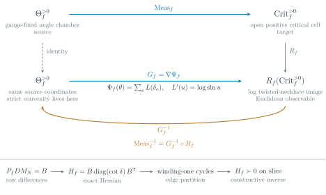
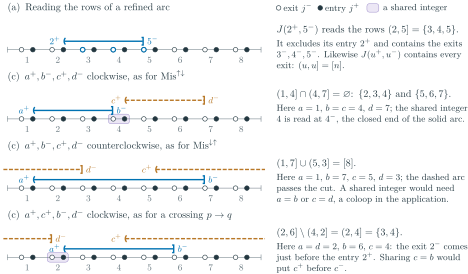
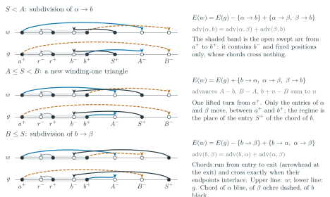
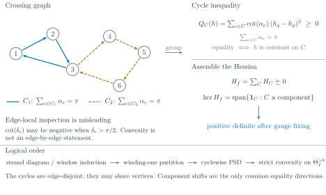
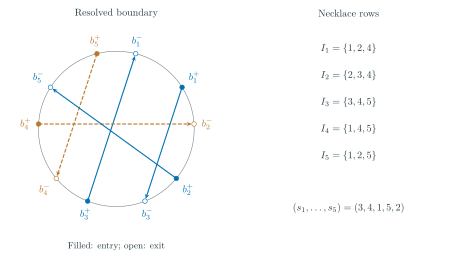
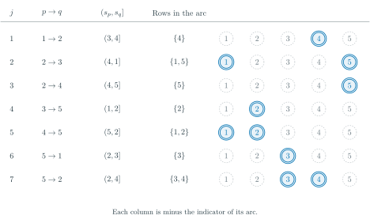
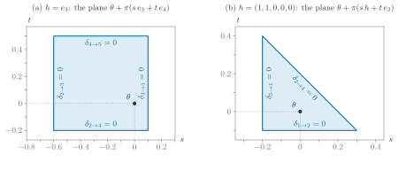
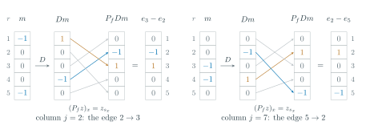
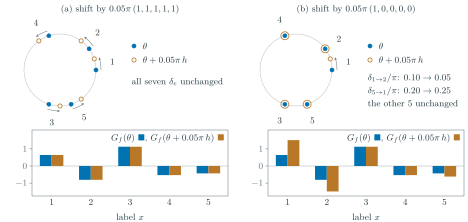
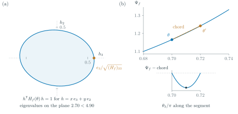
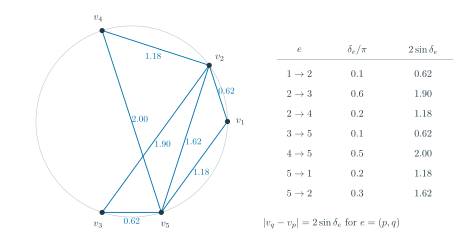
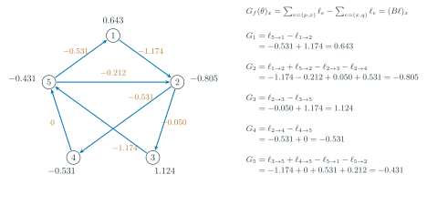
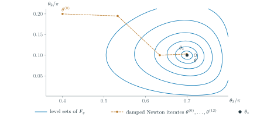
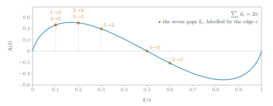
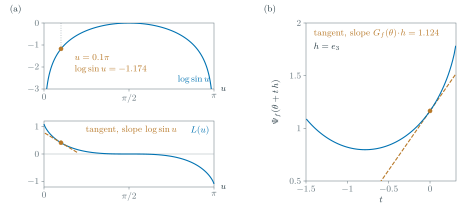
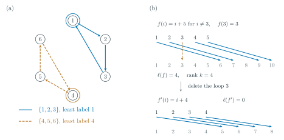
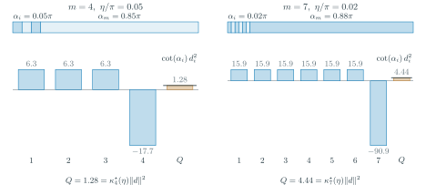
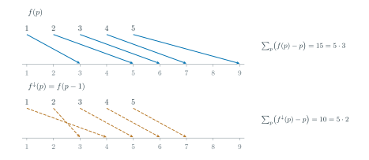
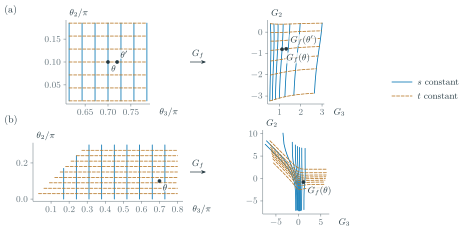
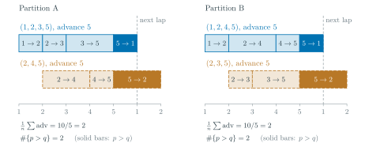
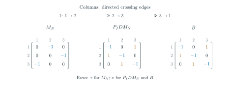
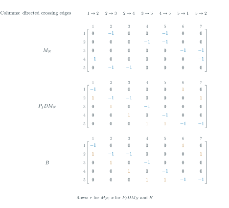
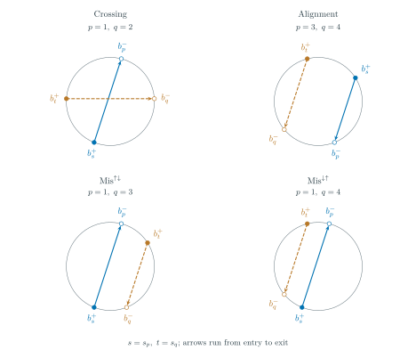
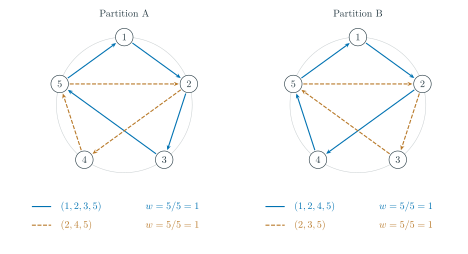
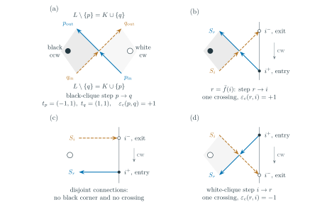
Claim manifest
11 rows. Results on this page are offered as proof candidates pending external mathematical review. The evidence tiers (PROVED_DRAFT, PROVED_AUDITED, VERIFIED, NUMERICAL, CONDITIONAL, OPEN, NOT_CLAIMED; KNOWN for results in the literature) are the program's own, and none of them means externally established. The bar summarizes the evidence composition of the manifest, not the weight of the result.
| ID | Statement | Status |
|---|---|---|
CLH-1 | For every loopless bounded affine permutation | PROVED_DRAFTevidencePROVED_DRAFT — proof written out in the paper; external review required. Lean scope (formal statements of 2026-10-08): a conditional formal theorem, not a formalization of CLH-1. If a map from the gauge slice (least-label representatives) onto a set Crit is continuous and surjective, and a continuous map N on Crit satisfies along it the necklace-row logarithmic form of Galashin Prop. 5.12 (every unordered pair, up to a common additive constant), then that map is a homeomorphism with inverse G_f^{-1} ∘ P_f D N; an abstract model shows the four hypotheses jointly satisfiable. They stand for Galashin Prop. 5.1 with Lem. 5.13, Prop. 4.2, Prop. 5.12 and the Muller–Speyer twist (Appendix A states each in mathematical notation). Lean constructs neither the measurement map nor the twist, so whether the hypotheses transcribe those results is a reader's check. The definitional interface is formal (statements of 2026-10-15): against Lean transcriptions of Galashin's definitions, the encoding is a bijection onto his loopless bounded affine permutations, the necklace rows are his affine formula, the crossings and the Mis classes are his, Conj43.pairExponent is his exponent in (5.8), and the half-open reading holds on his refined boundary; whether the transcriptions say what his definitions say is a reader's check. The convexity, injectivity, open-embedding and variational steps of thm:main on the slice are formal theorems; the frozen statements pass an independent statement-identity check with the standard axioms only |
CLH-2 | After the left twist and log-necklace coordinate | PROVED_DRAFTevidencePROVED_DRAFT. Lean scope (formal statements of 2026-10-08): formal theorems cover the hinge identity, the gradient G_f = Bℓ of the potential and its derivative B·diag(cot δ_e)·Bᵀ on the admissible chamber (ordinary and strict derivatives), the degree balance B1 = 0 with the vanishing of the log 2 constant and the component-shift invariance of G_f, and the derivation of R_f ∘ Meas_f = G_f from the necklace-row logarithmic form of Galashin Prop. 5.12 (every unordered pair, up to a common additive constant) through the formal noncrossing-column vanishing, row-difference identity and hinge. That logarithmic form is a hypothesis of the formal statement and the twist and measurement map are not constructed, so the identity still rests on Galashin Prop. 5.12 as transcribed in prop:rowdiff; the frozen statements pass an independent statement-identity check with the standard axioms only |
CLH-3 |
| PROVED_DRAFTevidencePROVED_DRAFT — via the winding-one edge-partition (CLH-5) + the cotangent cycle inequality; the cotangent-cycle ingredient lem:cot is LEAN_CERTIFIED (standard axioms only). Lean scope (formal statements of 2026-10-08): the assembled statement is formalized too, over every loopless f with coloops admitted: on the admissible chamber Σ cot δ_e (h_q − h_p)² ≥ 0, with equality exactly for h constant on every crossing component, its matrix form hᵀ B·diag(cot δ_e)·Bᵀ h, and the matrix kernel; on the gauge slice (least-label representatives) positive definiteness on the tangent space and strict convexity of Ψ_f; and the lifted cycle sum eq:cycle-sum. With the formal Hessian identity listed under CLH-2, the Hessian statements of this row are formal theorems; convexity of Ψ_f on the ambient chamber is not stated separately, and strict convexity on the slice is. The frozen statements pass an independent statement-identity check with the standard axioms only |
CLH-4 | Row-difference identity | PROVED_DRAFTevidencePROVED_DRAFT — symbolic, no arrangement enumeration. Lean scope (2026-10-07): LEAN_CERTIFIED in full, over LooplessBAP with loops excluded and coloops admitted: the crossing-edge columns (rowdiff), the coloop rows (Bmat_coloop_row, PDM_coloop_row), the vanishing of every non-crossing pair column, and the full unordered-pair identity (Conj43.pairExponent_nonCross, Conj43.full_pair_columns_zero, Conj43.rowdiff_full_pairs); the frozen statements pass an independent statement-identity check with the standard axioms only. Interface (statements of 2026-10-15): the exponent table, the Mis classes and the necklace rows are proved equal to Lean transcriptions of Galashin's (5.8), §5.4 and affine necklace formula |
CLH-5 | Existence of winding-one partitions (W-P): the directed crossing-edge set of any loopless | PROVED_DRAFTevidencePROVED_DRAFT — two independent proofs: (i) reduced alternating strand diagram → clockwise black-clique winding-one cycles → signed intersection excess → integral opposite-edge cancellation (imports Postnikov Lem. 14.6/Cor. 14.7 with Cor. 14.2, the boundary-vertex merge following Def. 14.3 with Lem. 14.4, and OPS Rem. 9.6 with Thm. 9.12, and derives the local sign count eq:signed-excess ray by ray, at interior corners and in the boundary collars, the black boundary resolution being a local construction added to Postnikov's merge — see rem:wp-imports); (ii) a self-contained window induction from the refined endpoint order, which is the machine-checked one. Lean scope (2026-09-15): LEAN_CERTIFIED via route (ii) only, over LooplessBAP with coloops admitted, so the machine statement certifies partition existence over all loopless f; the cycle count in its wrapped-edge form (Conj43.partition_card, with Conj43.winding_eq_wrapped) and the extension to decorated permutations (TP.dec_winding_one_partition) are further Lean theorems (statements of 2026-10-15); the count by total advance is also a Lean theorem (Conj43.partition_advance, Conj43.crossEdges_advance; statements of 2026-10-18); coloops are isolated vertices of the crossing graph and the cover induction handles them as fixed-position decorations. Standard axioms only |
CLH-6 | Decorated/looped measurement extension; anything about the boundary or compactification of | NOT_CLAIMEDevidenceNOT_CLAIMED — explicitly out of scope of THIS paper. The boundary and compactification claims separated from this paper live in the supplement “Boundary compatibility of the critical Gr–OG shift, and exact finite atlases” (BFA-1..BFA-4). A measurement or homeomorphism extension to decorated/looped cells is not claimed in this paper; the decoration-independent combinatorial observation in CLH-5 does not provide one. Problem 5.2 is addressed by the separate Problem 5.2 manuscript, not here. rem:loops gives a proof candidate for a looped extension under a reading of Galashin's Def. 1.8 that is the paper's, not Galashin's (lollipop ⇒ zero column ⇒ zero-column embedding of Gr(k,n−1)): the reducedness bookkeeping ℓ(f) = ℓ(f') + k is cited from the proof of Lam's Thm. 7.12, Postnikov's Thm. 13.2 gives an independent route, and the combinatorial facts are Lean theorems (TP.deleteLoop_bdd, TP.affRank_deleteLoop, TP.affLength_deleteLoop); the remark says in the text that none of it is claimed. Galashin states Conjecture 4.3 for loopless f only. |
CLH-7 | For every loopless | PROVED_DRAFTevidencePROVED_DRAFT — corollary derived in the paper from the pinned Galashin statements; external review required. Not Galashin–Pylyavskyy Question 9.2: only the lower-dimensional critical subloci, as stated in rem:shift-scope. Lean scope (2026-10-18): the combinatorial half is formalized: f↓(p) = f(p − 1) is bounded, periodic and bijective with rank k − 1 (Conj43.rank_sum, Conj43.shift_bounds, Conj43.shift_periodic, Conj43.shift_bijective, Conj43.shift_rank), f↓ ≥ id exactly when f has no loop (Conj43.shift_self_le_iff), and (f_τ^elec)↓ = f_τ^Ising for a matching on 2N ≥ 2 labels (Conj43.elec_shift_eq_ising). The homeomorphism Φ_f is not formalized. |
CLH-12 | For | PROVED_DRAFTevidencePROVED_DRAFT — proof written out in the paper; external review required. Supporting lem:sharp-localization is stated for 0 < eta < pi/m (strict): at the endpoint eta = pi/m its strict upper bound is an equality, kappa_m^star(pi/m) = cot(pi/m) = tan((m-2)(pi/m)/2). thm:sharp-cot dispatches that endpoint separately, so the theorem and the constant are unaffected. Lean scope (2026-10-18; 2026-10-20): the cycle inequality, its extremal pair, both bounds of lem:sharp-localization and the two-sided bound eq:sharp-laplacian-sandwich are Lean theorems (Conj43.sharp_cot_cycle, Conj43.sharp_cot_extremizer, Conj43.kappaStar_pos, Conj43.kappaStar_lt_tan, Conj43.sharp_laplacian_sandwich), and since 2026-10-20 so are the inverse-Lipschitz bound eq:sharp-inverse-lipschitz and its strong monotonicity (Conj43.sharp_inverse_lipschitz, Conj43.sharp_strong_monotone). |
CLH-13 | For every loopless | PROVED_DRAFTevidencePROVED_DRAFT — corollary of the proof of thm:main; external review required. Lean scope (2026-10-22, statement strengthened 2026-10-23): Conj43.variational_gradient_preimage states it on every formal slice S_a (with a = 0 it is the corollary), with the standard axioms only; since 2026-10-23 its statement is frozen (Challenge/GradientPreimage.lean, frozen after its proof, unlike the other groups) and Comparator-checked in the interface configuration. |
CLH-14 | For every loopless | PROVED_DRAFTevidencePROVED_DRAFT — corollary of thm:main and the twist identity Δ_{I_r}(A) = 1/Δ_{I_r}(τ̃(A)) cited from Galashin (proof of Prop. 5.4) and Muller–Speyer (proof of Prop. 6.6); external review required. Not formalized. |
CLH-15 | For every loopless | PROVED_DRAFTevidencePROVED_DRAFT — corollary of thm:main with the analytic immersion and inverse function theorems; external review required. Not formalized. |
Feedback sought: independent checking of the stated proofs and their hypotheses, the source identifications, and the reproducibility of the linked artifacts. Discuss this paper.
Cite this work
Adam Guetz. Galashin's Conjecture 4.3 via a convex gradient. Learned Response Labs preprint, 2026, October 23, 2026. https://learnedresponselabs.github.io/papers/conj43_loopless_homeomorphism.html.
@unpublished{conj43looplesshomeomorph,
author = {Adam Guetz},
title = {Galashin's Conjecture 4.3 via a convex gradient},
note = {Learned Response Labs preprint; proof candidate pending external review},
year = {2026},
url = {https://learnedresponselabs.github.io/papers/conj43_loopless_homeomorphism.html}
}